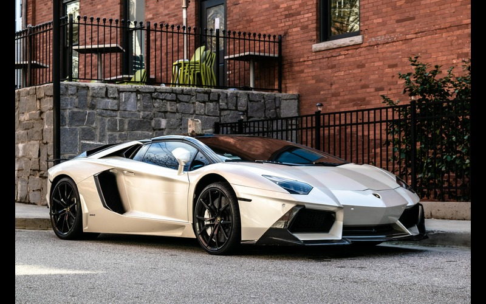

Welcome to the ultimate destination
for supercar enthusiasts! Dive into
the exhilarating world of automotive
excellence with our curated collection
of supercar companies and their
breathtaking machines. Discover the
icons of speed and luxury from renowned
manufacturers like Ferrari, Lamborghini,
McLaren, Bugatti, and more. Feast your
eyes on stunning visuals capturing the
essence of automotive artistry, from
sleek aerodynamic designs to roaring
engines that epitomize power and
performance. Explore each manufacturer's
legacy, from their humble beginnings
to their current status as pioneers
of automotive innovation.
1. Bugatti
Bugatti stands as the epitome of automotive excellence, seamlessly
blending unparalleled performance with unmatched luxury. Founded by
Ettore Bugatti in 1909, the brand has etched its name in automotive
history with a legacy of innovation and opulence. From the iconic Bugatti
Type 35, dominating 1920s racing circuits, to modern marvels like
the Veyron and Chiron, Bugatti continually sets the bar for supercars.
Bugatti's commitment to performance is unparalleled. The Bugatti Chiron
Super Sport 300+ exemplifies this ethos, breaking records as the first
production car to exceed 300 miles per hour, showcasing the brand's
dedication to pushing the limits of speed and power. Yet, Bugatti's
allure extends beyond mere performance. Each Bugatti is a masterpiece,
meticulously crafted to embody the brand's heritage of elegance and luxury.
From hand-stitched leather interiors to exquisite detailing, every aspect
exudes opulence and sophistication. Moreover, Bugatti's exclusivity adds
to its mystique, with limited production numbers maintaining an aura of rarity
and prestige. Owning a Bugatti isn't just owning a car; it's possessing a
piece of automotive history, a symbol of unparalleled achievement and status.
In essence, Bugatti remains an icon of automotive excellence, continually
pushing boundaries and setting new standards in the world of supercars.
2. McLaren
McLaren, a name synonymous with speed, precision, and innovation,
has solidified its position as one of the most revered supercar
manufacturers globally. Established in 1963 by Bruce McLaren, the brand's
journey from racing to road cars epitomizes a relentless pursuit of
excellence. McLaren's racing pedigree forms the foundation of its road cars.
From Formula 1 championships to Le Mans victories, the brand's motorsport
success directly influences its road-going creations. The McLaren P1,
for instance, incorporates Formula 1 technology, showcasing the seamless
blend of track performance and road legality. Central to McLaren's ethos
is a commitment to technological advancement. The McLaren 720S, with
its carbon fiber chassis and innovative aerodynamics, exemplifies the brand's
relentless pursuit of performance and efficiency. McLaren's dedication to
pushing boundaries is evident in its pursuit of electrification, with hybrid
powertrains now a staple in its lineup. However, McLaren doesn't sacrifice
luxury for performance. Each car is meticulously crafted, with interiors
tailored to the driver's every need, blending comfort with cutting-edge
technology seamlessly. Moreover, McLaren's track-focused ethos is
reflected in its limited production models, adding to their exclusivity and
desirability. Owning a McLaren isn't just owning a car; it's joining an elite
fraternity of automotive enthusiasts who appreciate the finer nuances of
performance and craftsmanship. In essence, McLaren represents the
pinnacle of automotive engineering, where speed, precision, and luxury
converge to create an unparalleled driving experience. With each new
model, McLaren reaffirms its status as a true icon of the automotive world.
3. Lamborghini
Lamborghini, an automotive legend founded in 1963 by Ferruccio Lamborghini,
epitomizes the marriage of raw power and Italian flair. From its humble
beginnings as a fierce competitor to established marques, Lamborghini has evolved
into an icon of automotive passion and innovation. At the heart of Lamborghini's
allure lies its unmistakable design language, characterized by sharp angles,
aggressive lines, and aerodynamic prowess. From the iconic Countach to the
modern-day Aventador and Huracán, each Lamborghini exudes a commanding presence
on the road, instantly recognizable and eternally captivating. Performance is
the beating heart of every Lamborghini. With engines that roar with ferocity and
acceleration that pins you to your seat, Lamborghinis are built to exhilarate.
Whether tearing up the track or cruising the streets, each Lamborghini delivers
an adrenaline-fueled driving experience that is second to none. Yet, Lamborghini
is not merely about speed; it's also about luxury and exclusivity. Step inside a
Lamborghini, and you're greeted by sumptuous materials, cutting-edge technology,
and bespoke craftsmanship that cater to the most discerning of tastes. Moreover,
Lamborghini's limited production models, such as the Veneno and Centenario,
exemplify the brand's commitment to pushing boundaries and redefining automotive
excellence. In essence, Lamborghini is more than just a car; it's a symbol of
automotive passion, style, and performance. With each new model, Lamborghini
continues to inspire awe and captivate enthusiasts around the world, reaffirming
its status as a true icon of the automotive industry.

4. Ferrari
Ferrari, the epitome of automotive passion and performance, has captivated enthusiasts
worldwide since its inception in 1939 by Enzo Ferrari. From its racing origins to
its iconic road cars, Ferrari represents the ultimate expression of speed, style,
and luxury. At the heart of Ferrari's legacy lies a commitment to racing excellence.
With a storied history in Formula 1 and endurance racing, Ferrari's motorsport
pedigree infuses every car with a racing spirit. From the legendary Ferrari 250
GTO to modern masterpieces like the LaFerrari, each model embodies the brand's
racing DNA, delivering blistering performance and precision engineering. Ferrari's
design philosophy is as iconic as its prancing horse emblem. Striking silhouettes,
sculpted curves, and aerodynamic prowess define every Ferrari, creating a visual
spectacle that stirs the soul and commands attention on the road. Performance is
paramount in every Ferrari. With powerful engines, lightning-fast acceleration,
and razor-sharp handling, Ferrari cars offer an exhilarating driving experience
that ignites the senses and leaves an indelible impression. Moreover, Ferrari's
exclusivity adds to its allure, with limited production models and bespoke
customization options catering to the most discerning clientele. In essence,
Ferrari is more than just a car; it's a symbol of automotive passion, excellence,
and prestige. With each new model, Ferrari continues to push the boundaries of
innovation, reaffirming its status as the quintessential Italian sports car manufacturer.
5. Porsche
Porsche, a name synonymous with precision engineering and driving excellence, has been
crafting iconic sports cars since 1948. Founded by Ferdinand Porsche, the brand's
relentless pursuit of performance has cemented its status as one of the most
revered automotive manufacturers in the world. Porsche's rich racing heritage
serves as the cornerstone of its road car development. From the iconic 911 to
the adrenaline-inducing 718 Cayman and Boxster, each Porsche is imbued with a
racing pedigree that translates to exhilarating performance on both the road
and the track. Design is another hallmark of Porsche's identity. Characterized
by timeless elegance and aerodynamic efficiency, Porsche cars boast sleek
silhouettes and distinctive styling cues that command attention wherever they go.
Inside, meticulous attention to detail and ergonomic perfection create an
immersive driving environment tailored to the enthusiast's needs. Performance is
at the core of every Porsche. With powerful engines, razor-sharp handling, and
precise engineering, Porsche cars deliver a dynamic driving experience that sets
them apart from the competition. Furthermore, Porsche's commitment to innovation
extends beyond performance, with advancements in hybrid and electric technology
shaping the future of mobility. In essence, Porsche represents the pinnacle of
automotive engineering, where passion, performance, and precision converge to
create driving experiences that transcend mere transportation. With each new model,
Porsche continues to push the boundaries of what's possible, reaffirming its
position as a true icon of the automotive world.\
6. Aston Martin
Aston Martin, a symbol of British luxury and performance, has captured the hearts
of automotive enthusiasts since its founding in 1913. With a legacy steeped in
elegance and speed, Aston Martin has earned its place among the most prestigious
automotive marques in the world. Craftsmanship lies at the heart of Aston Martin's
allure. Each car is meticulously handcrafted, blending cutting-edge technology
with traditional artisanal techniques to create automotive masterpieces that
exude sophistication and refinement. Design is another cornerstone of
Aston Martin's identity. From the iconic grille to the sweeping curves of the
bodywork, Aston Martin cars are instantly recognizable, radiating timeless beauty
and class. Inside, sumptuous materials and meticulous attention to detail create a
luxurious driving environment that indulges the senses. Performance is synonymous
with Aston Martin. With powerful engines, dynamic handling, and exhilarating
performance, Aston Martin cars deliver a driving experience that thrills and
inspires. Moreover, Aston Martin's association with the James Bond franchise has
elevated its status to legendary proportions, cementing its place in popular
culture as the epitome of style and sophistication. In essence, Aston Martin
represents the epitome of British automotive excellence, where luxury,
performance, and craftsmanship converge to create automotive works of art.
With each new model, Aston Martin continues to push the boundaries of
innovation while staying true to its heritage of elegance and speed.\
7. Mercedes-Benz
Mercedes-Benz, a name synonymous with automotive excellence, has been at the
forefront of luxury and innovation since its inception in 1926. Founded
by Karl Benz and Gottlieb Daimler, the brand's commitment to engineering
perfection and luxury has solidified its status as a global icon. Craftsmanship
is the cornerstone of Mercedes-Benz's identity. Each car is meticulously
designed and meticulously assembled, blending state-of-the-art technology
with time-honored craftsmanship to create vehicles that embody sophistication
and refinement. Design is another hallmark of Mercedes-Benz's allure. From the
iconic three-pointed star emblem to the elegant lines of the bodywork,
Mercedes-Benz cars exude a sense of timeless beauty and class. Inside,
luxurious materials and cutting-edge technology create a driving environment
that is both opulent and inviting. Performance is central to the Mercedes-Benz
experience. With powerful engines, precise handling, and innovative safety
features, Mercedes-Benz cars offer a dynamic driving experience that is both
exhilarating and reassuring. Moreover, Mercedes-Benz's commitment to innovation
extends beyond the realm of luxury cars, with advancements in electric and
autonomous driving technology shaping the future of mobility. In essence,
Mercedes-Benz represents the pinnacle of automotive engineering and luxury,
where tradition meets innovation to create vehicles that inspire and delight.
With each new model, Mercedes-Benz continues to set the standard for automotive
excellence, reaffirming its position as a true icon of the automotive world.\
8. BMW
BMW, Bayerische Motoren Werke AG, stands as a paragon of precision engineering,
driving dynamics, and luxury in the automotive world. Established in 1916,
BMW has evolved from an aircraft engine manufacturer to a global leader in
premium automobiles. Craftsmanship is at the core of BMW's ethos. Each BMW
vehicle is meticulously crafted, blending cutting-edge technology with meticulous
attention to detail to create cars that exemplify sophistication and performance.
Design is another hallmark of BMW's identity. From the iconic kidney grille to
the sleek lines of the bodywork, BMW cars boast a distinctive and unmistakable
aesthetic. Inside, luxurious materials and innovative features combine to create
a driving environment that is both elegant and driver-centric. Performance is
synonymous with BMW. With powerful engines, agile handling, and dynamic driving
characteristics, BMW cars offer an exhilarating driving experience that is both
engaging and rewarding. Moreover, BMW's commitment to innovation extends beyond
performance, with advancements in electric mobility and autonomous driving
technology shaping the future of transportation. In essence, BMW represents the
pinnacle of automotive engineering and luxury, where passion for driving meets
uncompromising quality and innovation. With each new model, BMW continues to push
the boundaries of what's possible, reaffirming its position as a true icon of the
automotive world.\
9. Rolls Royce
Rolls-Royce, the epitome of automotive luxury and refinement, has epitomized
elegance and excellence since its founding in 1906. Founded by Charles Rolls
and Henry Royce, the brand has become synonymous with unparalleled
craftsmanship, sophistication, and exclusivity. Craftsmanship is the cornerstone
of every Rolls-Royce vehicle. Each car is meticulously handcrafted, with
attention to detail that borders on the obsessive, resulting in automotive
masterpieces that are unparalleled in quality and prestige. Design is another
hallmark of Rolls-Royce's identity. From the iconic Spirit of Ecstasy emblem to
the imposing presence of the Pantheon grille, Rolls-Royce cars exude an aura of
opulence and grandeur. Inside, sumptuous materials and exquisite finishes create
an ambiance of luxury and serenity that is unmatched in the automotive world.
Performance, though often secondary to luxury in Rolls-Royce vehicles, is still
present in abundance. With powerful engines and refined handling, Rolls-Royce
cars deliver a driving experience that is smooth, effortless, and utterly
refined. Moreover, Rolls-Royce's exclusivity adds to its allure, with bespoke
customization options and limited production models catering to the most
discerning of clientele. In essence, Rolls-Royce represents the pinnacle of
automotive luxury, where craftsmanship, design, and performance converge to
create vehicles that are as awe-inspiring as they are exclusive. With each new
model, Rolls-Royce continues to redefine the standards of automotive opulence,
reaffirming its position as the ultimate expression of luxury on wheels.\
10. Bentley
Bentley, a symbol of British luxury and craftsmanship, has been synonymous
with elegance and performance since its establishment in 1919 by Walter Owen
Bentley. From its early racing successes to its current status as a pinnacle
of automotive luxury, Bentley has remained steadfast in its commitment to
excellence. Craftsmanship lies at the heart of every Bentley vehicle. Each car
is meticulously handcrafted at the brand's historic headquarters in Crewe,
England, where skilled artisans employ traditional techniques alongside
cutting-edge technology to create automotive masterpieces of unparalleled
quality and refinement. Design is another hallmark of Bentley's identity. From
the iconic matrix grille to the sleek lines and flowing curves of the bodywork,
Bentley cars exude an understated elegance and commanding presence on the road.
Inside, sumptuous materials and exquisite detailing create a luxurious sanctuary
for drivers and passengers alike. Performance is central to the Bentley experience.
With powerful engines, refined handling, and effortless acceleration, Bentley cars
offer a driving experience that is both exhilarating and refined, blending
performance with comfort in perfect harmony. Moreover, Bentley's exclusivity
adds to its allure, with bespoke customization options and limited production
models catering to the most discerning of clientele. In essence, Bentley represents
the epitome of automotive luxury, where craftsmanship, design, and performance
converge to create vehicles that are as exquisite as they are exclusive. With each
new model, Bentley continues to set the standard for luxury motoring, reaffirming
its position as a true icon of British automotive excellence.\